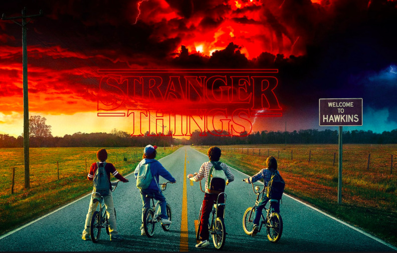

おすすめドラマ3選
① ペーパーハウス
強盗、殺人、お尋ね者。さまざまなバックボーンを持った者たちが手を組み、スペインの王立造幣局をジャックする。首謀者は計画を進めるためにあらゆる策を講じて警察に対抗する。
スペインの作品ということもあり、スペインの文化や独特な言い回しがあり見てて新鮮な気持ちで見れた。主人公「トーキョ」演じるウルスラ・コルベロがめちゃくちゃ美人。
② ナルコス

1980年代、コロンビアを舞台に麻薬取締捜査官のアメリカ人2人が、「麻薬王」パブロ・エスコバルというコロンビア人を追い詰めていく実在した話。
グロテスクなシーンが所々ある割には、あまり暗い気分にならない。多分南米のカラッとした雰囲気がそうさせてると思う。
この他にメキシコ編もある。個人的にはコロンビア編の方が見応えがあった。
③ ストレンジャーシングス
